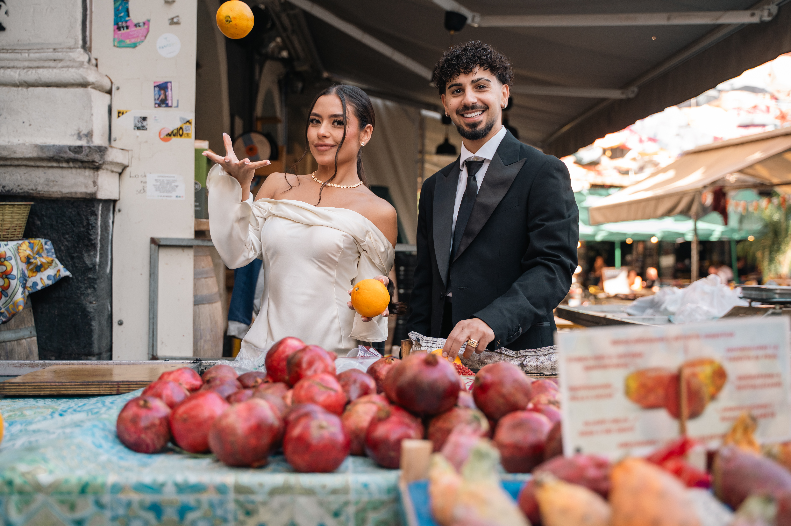
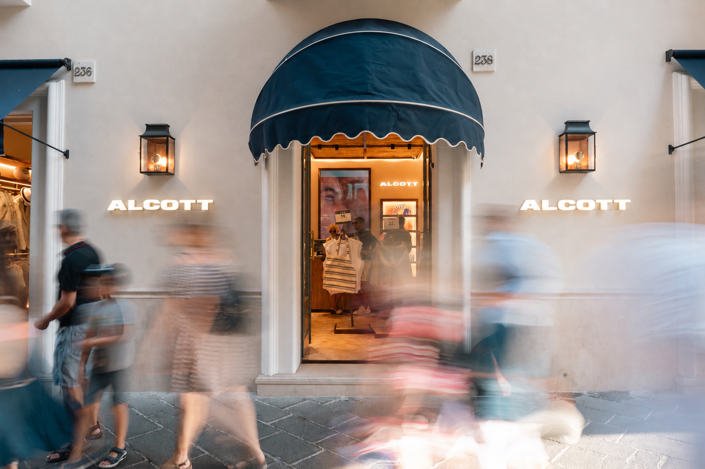

Evento pubblico
Misterbianco
Matrimoni • Eventi privati • Eventi pubblici
Racconto le emozioni con fotografie senza tempo, tra eventi privati e pubblici.
Scopri i miei lavori




Il mio approccio
Fotografo matrimoni, feste private ed eventi pubblici con uno sguardo naturale e attento.
Cerco emozioni sincere, dettagli significativi e tutto ciò che rende unico ogni evento. Ne nasce un racconto visivo autentico, elegante e senza tempo.
Scopri il mio approccioServizi
Scopri i servizi fotografici per feste private ed eventi pubblici.
Lavoriamo insieme
Che tu stia organizzando un matrimonio, una festa privata o un evento pubblico, sarò felice di raccontarlo attraverso fotografie senza tempo.
Richiedi un preventivoCon base in Sicilia Disponibile in tutto il mondo